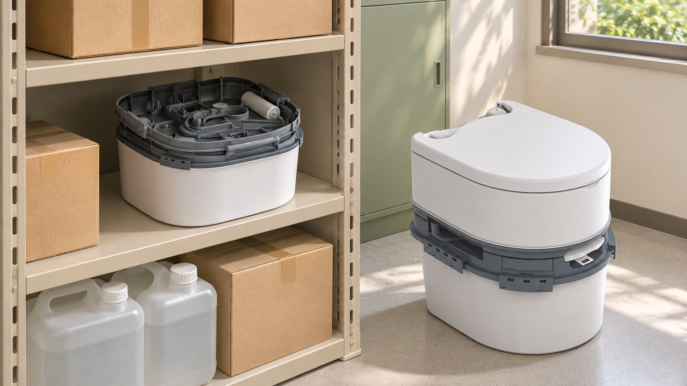
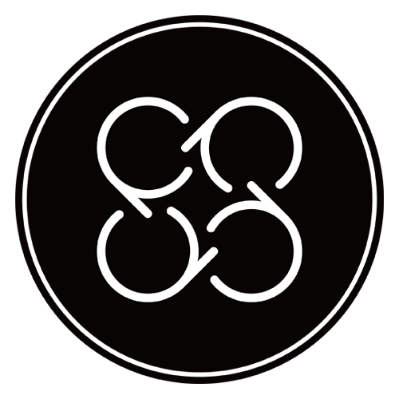
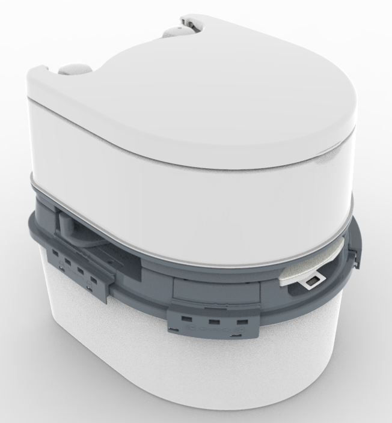
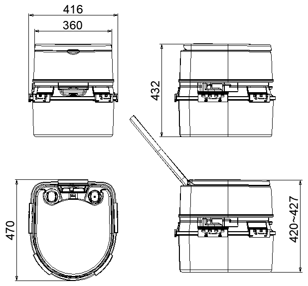
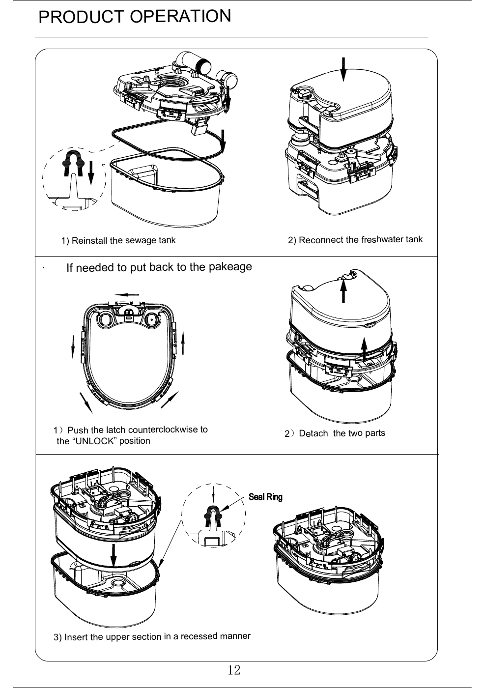

平時の備えSCENE 01 / STORE使わないときは、
使わないときは、
小さく備える。
企業や集合住宅の備蓄スペースへ。上下の部品を分離して内側に重ね、使用時より低い形で収納できます。
清掃・乾燥後に収納。収納高さは約216mm、使用時432mmの約1/2。複数台の積載条件は別途確認。収納設計を見る ↘
MIELOO CORPORATION平時はコンパクトに収納。災害時は必要な場所へ。
洗浄用水と指定の排出先を確保した拠点で、持ち運んで
設置できるポータブル水洗トイレです。

備える。運ぶ。使う。清水タンク
汚水タンクの公称容量
本体重量・空の状態
平時の備蓄から、災害時の設置、使用後の管理まで。
場面を切り替えて、それぞれに役立つ機能をご覧ください。
生活上の不便を想定したAIイメージです。実際の災害写真・導入実績ではありません。各画像を押すと、関連する製品写真と説明を確認できます。
AIによる防災運用のイメージです。実際の被災現場・導入実績・性能試験ではありません。周辺備品は別途準備。実物の構成と操作は仕様書・説明書を優先。
安全で水平な屋内に設置。動線、換気、プライバシーと手指衛生を確保します。
洗浄用水を飲用水と区別して管理。必要量は実機で測り、補水の担当も決めます。
汚水の回収・処理先を先に確保。液面表示が赤くなり始めたら、早めに排出します。
地震後は大型設備だけでなく、下水道や汚水回収も止まる可能性があります。事前に備蓄し、洗浄用水と指定排出先の受入・回収を確認できた小規模拠点で、補助的に運用する想定です。
屋外に独立した目隠し空間と安全な水平面を用意。洗浄用水、手指衛生、汚水回収を組み合わせ、担当者が清掃・補水・排出を管理します。
従業員や利用者が一時的に滞在する施設の備蓄に。人数に応じた台数、独立した目隠し空間、衛生用品を準備します。
既存トイレが足りない拠点で、運用条件を整えて補助的に使用。移動の負担も考慮し、平坦で安全な場所を選びます。
画像はAIによる想定図です。導入を検討するための想定例です。ポータブル水洗トイレの実際の災害導入実績を示すものではありません。洗浄水が確保できない場所や、適切な排出先がない場所には、この水洗式の運用は適しません。
キャンプや車中泊など、固定のトイレが使いにくい場面にも。平時に補水・操作・排出・清掃を経験しておくことが、非常時の運用準備にもつながります。
サイトの設備やルールに合わせ、プライバシーを確保した水平な場所に。洗浄用水を用意し、キャンプ場等が認める排出先で処理します。
停車中に使用する備えとして。水平で安全な設置場所、換気、プライバシーを確保し、移動前には水位・キャップ・バルブを確認します。
身近な場所に一時的なトイレを検討する際の選択肢。使用者の座位・立ち座りの安全性、介助スペース、清掃担当を確認してから使用します。
画像はAIによる利用場面のイメージです。実際の導入事例ではなく、テント・車両・間仕切り等は付属しません。
どの場面でも洗浄用水・清掃・適切な汚水処理が必要です。走行中の使用は想定していません。介護専用品としての性能やバリアフリー対応を保証するものではありません。手すりや移乗支援が必要な場合は専用設備を検討してください。
備蓄品は、しまいやすさも大切。
上下の部品を分離して内側に重ねることで、
使用時より低い形に収納できます。
使用時432mmの約1/2の高さに。上下を分離して内側へ重ねて収納します。
本体全体が折りたたまれるのではなく、部品を分離して重ねる収納方式。清掃・乾燥後に、説明書の手順で収納します。
持ち手と分離式タンクで、備蓄場所から使用場所へ。水や汚水が入ると重くなるため、運搬方法は事前に確認します。
汚水タンクを取り外して排出・清掃。専用の洗浄剤と適合するお手入れ用品で、次の出番に備えます。
汚水タンクを取り外し、回転式排出管で指定の回収設備へ。生活・飲食スペースと分けて管理します。
密閉バルブは臭気や漏れを抑えるための設計。密封部を正しく組み立て、専用の用品で清掃します。
上の画像はAIによる運用・構造のイメージです。実際の災害現場や性能試験ではありません。構成と操作はメーカー資料を優先し、供給仕様はサンプルで確認してください。
断水や避難生活の想定から、備蓄・運搬・使用後の管理まで。
防災の視点でまとめた96秒の製品紹介です。
AIによる想定場面、参考商品画像、メーカー提供CGを編集した紹介映像です。日英字幕は映像に表示されます。音声はありません。実際の災害記録・導入実績・性能試験ではありません。操作は取扱説明書を優先してください。
備水量と利用人数から、補水・排出の目安を確認。
数値を変えて、あなたの備蓄計画を考えてみましょう。
既定値では毎日の点検・排出を計画し、洗浄水は1日約6Lを補充する想定です。水位・重量・衛生状態を優先し、薬剤や便紙の体積によっては早めの排出が必要です。
| 期間 | 利用回数 | 洗浄水の総量 | 現在の備水に追加する量 | 汚水の総量 | 期間中の排出／終了時まで全量排出 |
|---|
終了時まで全量排出する計画なら、既定値は3日で3回、7日で7回です（期間中はそれぞれ2回・6回、最後に残量を排出）。約15Lまでの利用回数で区切る仮定で、日々の早めの排出や便紙・薬剤によって回数は増えます。洗浄水総量が14Lを超える場合は分けて補水。手洗い・清掃用水は別途必要です。
これは備蓄計画のための概算で、製品性能や安全な使用期間の保証ではありません。初期値0.30L／利用・排泄物0.35L／利用・5回／人日は説明用の仮定で、実測値ではありません。清水タンクは最大14L、超える備水は外部容器に別途保管。手洗い・清掃用水、薬剤、水の損失、便紙の体積は計算に含みません。実機で必要水量を確認し、衛生を保つ十分な量を使用してください。
| 確認すること | 本製品：ポータブル水洗トイレ | 便袋・凝固剤式 |
|---|---|---|
| 洗浄用水 | 備水・補水が必要 | 洗浄用水は不要 |
| 使用感・繰り返し使用 | 水で便器を洗浄。本体は清掃して繰り返し使用 | 使用ごとに便袋を交換。便座・個室は別途確保 |
| 排出・回収 | 指定排出点と汚水搬送・回収が必要 | 液体汚水の排出設備は不要。使用済み袋の衛生的保管・回収は必要 |
| 維持管理 | 補水・液面確認・排出・清掃の担当が必要 | 袋・凝固剤の補充と便座周辺の清掃が必要 |
| 選択の目安 | 水と汚水回収体制を確保した小規模・分散拠点 | 洗浄用水や液体汚水の排出先を確保しにくい場面 |
備蓄計画の参考：内閣府の令和6年12月改定指針は、便袋の必要数を1人1日5回で計算し、まず3日分を目標としています。広島市は3日分、できれば1週間分を案内しています。4人なら3日分60回、7日分140回です。本製品1台の処理能力を示す数値ではありません。
国や自治体は、災害用トイレの備蓄や、企業・施設の受入体制づくりを進めています。本製品は、水と回収体制を整えた拠点の補助設備として検討する選択肢です。
防災基本計画は、携帯トイレ・簡易トイレなどの備蓄を普及啓発の対象にしています。日数の基準と、本製品の補水・排出能力は別に計画します。
組み込み方：便袋式の備蓄と併せ、水洗式を使える拠点・人数・担当者を決める。
中央防災会議：防災基本計画 ↗東京都の帰宅困難者対策条例第7条は、事業者に従業者3日分の飲料水・食糧等の備蓄に努めることを求めています。本製品の購入を義務付けるものではありません。
組み込み方：BCPや訓練の中で、保管場所、補水、清掃、指定排出点を確認する。
東京都：帰宅困難者対策条例 ↗東京とどまるマンションや板橋区の制度では、防災備蓄資器材の例に簡易トイレが挙げられています。ただし、本製品の対象可否は確認できていません。
組み込み方：仕様書と運用計画を準備し、購入前に制度窓口へ対象可否を確認する。
東京都の制度資料 ↗板橋区の制度資料 ↗制度資料確認日：2026年11月13日。地域・年度・予算・申請者の要件により対象は異なります。記載は背景情報であり、本製品の政府認定・推奨や補助金交付を示すものではありません。
背景資料：石川県の能登半島地震記録では、断水・下水設備被害によるトイレ不足と、備蓄・清掃・し尿処理体制の必要性が整理されています。 石川県の記録 ↗

メーカー仕様書と取扱説明書に基づく公称値。第三者試験による認証を示すものではありません。供給版・梱包構成はご注文前に確認します。
メーカー取扱説明書の原図です。実際の収納・組立時はこちらをご確認ください。

ポータブル水洗トイレは水洗式です。洗浄用水を準備する必要があります。便袋・凝固剤の併用は、事前にメーカーとの適合確認が必要です。
取扱説明書には洗浄回数120〜130回とありますが、ポンプ操作か一連の洗浄かの定義と試験条件は未確認です。使用人数・日数を保証する値ではありません。1利用あたりの水量を実機で確認し、汚水の排出計画と併せて運用してください。
清掃して十分に乾燥させた後、説明書に従い部品を分離し、上部を内側に重ねて収納します。収納状態の本体寸法と梱包方法は、サンプルでご確認ください。複数台の外箱を積む場合の許容段数は別途確認が必要です。
企業のBCP備蓄、集合住宅の管理拠点、小規模な一時滞在スペースを想定しています。洗浄用水、排出先、清掃担当者、プライバシーを確保できるか、施設ごとに評価してください。